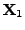
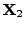

#include <gandalf/vision/homog33_fit.h>
If a part of the viewed scene is planar, or the camera is undergoing a
pure rotation (or both), the (part of the) scene can be reconstructed
using 2D methods. Here we assume a point-cloud representation, so
the scene is represented by 
Note that this formulation differs from the normal formulation which
considers the homographies between images. That is a special case
of our formulation, because we can take an image as the projective
``scene'' representation  . The scene/image formulation also
allows us to represent the motion over a sequence of
. The scene/image formulation also
allows us to represent the motion over a sequence of  images in
a compact way as the set of homographies
for images
mapping the scene
images in
a compact way as the set of homographies
for images
mapping the scene  to each set of image points
,
rather than as an arbitrary collection of pairwise homographies.
to each set of image points
,
rather than as an arbitrary collection of pairwise homographies.
To start the calculation, define an accumulated symmetric matrix eigensystem structure and initialise it using the following routine:
Gan_SymMatEigenStruct SymEigen;
/* initialise eigensystem matrix */
gan_homog33_init ( &SymEigen );
Then for each point correspondence, build the equations 5.4
and increment the accumulated symmetric eigensystem matrix
by calling the following function:
int iEqCount=0, iCount;
Gan_Vector3 v3X, v3x; /* declare scene and image points X & x */
for ( iCount = 0; iCount < 100; iCount++ )
{
/* ... build scene and image point coordinates into X and x ... */
/* increment matrix using point correspondence */
gan_homog33_increment_p ( &SymEigen, &v3X, &v3x, 1.0, &iEqCount );
}
The fourth argument 1.0 is a weighting factor for the equations as
described in Section 3.2.2.15. The last argument iEqCount
is a running count of the total number of equations processed thus far,
to be passed below to the function to solve for Once the point correspondences have been processed in this way, you can solve the equations using
Gan_Matrix33 m33P; /* homography matrix P */
gan_homog33_solve ( &SymEigen, iEqCount, &m33P );
to compute the homography
gan_homog33_reset ( &SymEigen );
At the end of the homography calculation(s) you can free the eigensystem structure using the function
gan_homog33_free ( &SymEigen );
Given correspondences between lines, it is also possible to generate
homogeneous linear equations for  and either combine with points or
compute
and either combine with points or
compute  purely from lines. To see how to derive the equations for
lines, take the line equations
purely from lines. To see how to derive the equations for
lines, take the line equations
Gan_Vector3 v3L, v3l; /* declare scene line L and image line l */
/* ... fill L and l with values for corresponding lines ... */
/* increment matrix using line correspondence */
gan_homog33_increment_l ( &SymEigen, &v3L, &v3l, 1.0, &iEqCount );
This is assuming that the endpoints of the scene line are unknown. In practice
the scene line will normally be created from previous matching of image
lines, which are line segments, so that the endpoints  and
 of the line in scene coordinates will be approximately known.
Note that we don't depend on locating the actual endpoints of the line
accurately, which is a notoriously difficult problem. You should think of
the two points and instead as representative
points on the line. In this case
there is an alternative way of incorporating the line information which
seems to give better numerical performance. We note that the scene line
endpoints and should project onto the image line  ,
so we obtain
,
so we obtain
Gan_Vector3 v3X1, v3X2; /* declare scene line endpoints X1 & X2 */
Gan_Vector3 v3l; /* image line homogeneous coordinates l */
/* ... set X1, X2 and l for corresponding scene line and image line ... */
/* add equations for two endpoints */
gan_homog33_increment_le ( &SymEigen, &v3X1, &v3l, 1.0, &iEqCount );
gan_homog33_increment_le ( &SymEigen, &v3X2, &v3l, 1.0, &iEqCount );
Error detection: gan_homog33_init() returns a pointer to the initialised structure, and returns NULL on error. All the other routines except the void routine gan_homog33_free() return a boolean value, which is GAN_FALSE on error. The Gandalf error handler is invoked when an error occurs.